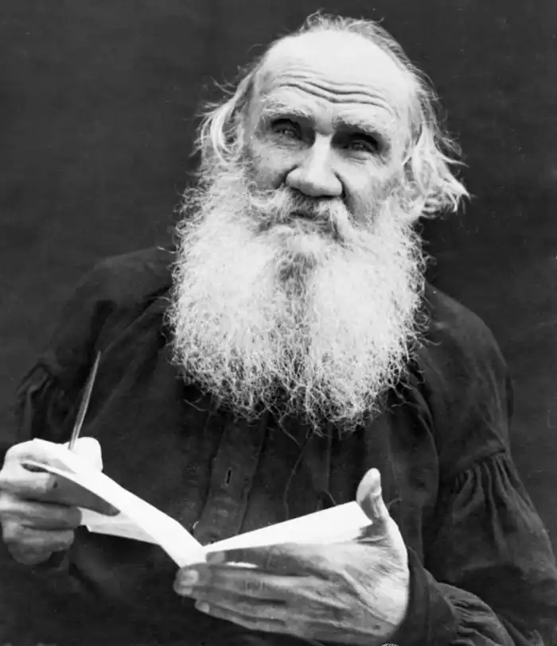
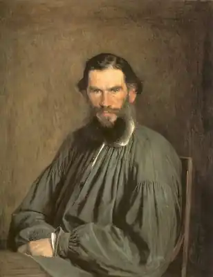

ТОЛСТОЙ, Лев Миколайович (Толстой, Лев Николаевич — 28.08.1828, маєток Ясна Поляна Тульської обл. — 07.11.1910, станція Астапово Рязансько-уральської залізниці) — російський письменник.
"Великий письменник російської землі", як в останньому листі до Толстого (від 24 червня 1883 р.) назвав його І. Тургенєв, за народженням і вихованням належав до вельможного дворянського роду. Поміж предків письменника по лінії батька — соратник Петра І, П. Толстой, котрий одним із перших у Росії отримав титул графа. Учасником Вітчизняної війни 1812 р. був батько письменника, граф М. Толстой. По материнській лінії Толстой належав до давнього роду князів Волконських, поріднених із князями Трубецькими, Голіциними, Одоєвськими та ін. вельможними сім'ями. По матері Толстой доводився родичем О. Пушкіна. Їхній спільний предок — відомий соратник Петра І боярин І. Головин. Одна із його дочок — прабаба поета, а інша — прабаба матері Толстого.
Живучи у давньому родовому маєтку, Толстой ще в дитинстві почув сімейні легенди та перекази про війну 1812 р. і не таке далеке повстання декабристів. Уже в дитячі та підліткові роки у Толстого зародилася глибока зацікавленість вітчизняною історією. "Без своєї Ясної Поляни, — зізнавався він згодом, — я заледве можу собі уявити Росію та своє ставлення до неї". У Ясній Поляні Толстой зблизька бачив, як живе звичайний народ, що став його "найранішою любов'ю". Тут ще до того часу, як він познайомився з віршами Пушкіна, Толстой почув чимало народних казок, пісень, билин. Коли Толстому було дев'ять років, батько вперше повіз його у Москву, враження від зустрічі з якою були незабутніми. Перший період московського життя юного Толстого тривав менше чотирьох років. Він рано осиротів, втративши спочатку матір, а згодом і батька. Разом із сестрою і трьома братами Толстой переїхав у Казань. Там жила одна із батькових сестер, котра й заопікувалася дітьми. Мешкаючи у Казані, Толстой два з половиною роки готувався до вступу в університет, де навчався з 1844 р. спочатку на "східному", а згодом на юридичному факультетах. Відомий тюрколог професор Казембек, котрий готував його до іспитів, був здивований лінгвістичними здібностями юного Толстого. У зрілому віці Толстой вільно спілкувався англійською, французькою і сербською; знав грецьку, латинську, українську, татарську, церковнослов'янську; вивчав давньоєгипетську, турецьку, голландську, болгарську та ін. мови. Не вважаючи себе поліглотом, Толстой, попри те, мав можливість знайомитися із творами багатьох зарубіжних письменників в оригіналі. Толстому йшов дев'ятнадцятий рік, коли він розпочав вести щоденник, який продовжував до смерті (у Повному зібранні творів щоденник займає 13 томів).Заняття за державними програмами та підручниками обтяжували Толстого-студента. Він захопився самостійною роботою з історичної теми і, покинувши університет, поїхав із Казані у Ясну Поляну, яку отримав після розподілу спадщини батька. Потім він відправився у Москву, де наприкінці 1850 р. розпочалася його письменницька діяльність: незакінчена повість із циганського побуту (рукопис не зберігся) й опис одного прожитого дня ("Історія вчорашнього дня"). Тоді ж він розпочав повість "Дитинство" ("Детство"). Незабаром Толстой вирішив поїхати на Кавказ, де його старший брат Микола, офіцер-артилерист, служив у діючій армії. Молодому Толстому баглося побачити війну своїми очима і перевірити власну відвагу. Вступивши в армію юнкером, він потім склав іспит на молодший офіцерський чин. Епізоди Кавказької війни Толстой змалював в оповіданнях "Наскок" (1853), "Рубання лісу" (1855), "Розжалуваний" (1856), у повісті "Козаки" (1852—1863). На Кавказі письменник закінчив повість "Дитинство", у 1852 р. опубліковане в журналі "Сучасник" ("Современник"). Із початком Кримської війни Толстой перевівся з Кавказу у Дунайську армію, що воювала проти турків, а потім у Севастополь, обложений об'єднаними силами Англії, Франції і Туреччини. Командуючи батареєю на бастіоні, Толстой проявив неабияку відвагу і був нагороджений орденом Анни і медалями. Восени 1856 p. Толстой вийшов у відставку і незабаром відправився у піврічну закордонну подорож, відвідавши Францію, Швейцарію, Італію і Німеччину. У 1859 р. Толстой відкрив у Ясній Поляні школу для селянських дітей, а потім допоміг відкрити понад 20 шкіл у навколишніх селах. Письменник видавав педагогічний журнал "Ясна Поляна" (1862). Уже перші твори Толстого — повісті "Дитинство", "Отроцтво" ("Отрочество") і "Юність" ("Юность"), кавказькі та севастопольські воєнні оповідання, "Ранок поміщика " — свідчили, що в російську літературу прийшов новий видатний художник. За задумом автора, "Дитинство", "Отроцтво" і "Юність", а також повість "Молодість" ("Молодость"), яка, проте, не була написана, повинні були скласти роман "Чотири епохи розвитку". Змальовуючи становлення характеру Миколи Іртеньєва, Толстой прискіпливо досліджує, як впливало на його героя середовище — спочатку вузький родинний світ, а потім усе ширше коло його нових знайомих, однолітків, друзів, суперників. Уже у першому закінченому творі, присвяченому ранній і, як твердив Толстой, найкращій, найпоетичнішій порі людського життя — дитинству, він із глибоким сумом пише про те, що поміж людьми зведені жорстокі перепони, які роз'єднують їх на безліч груп, розрядів і кіл. Особливо важким для Іртеньєва виявилося отроцтво. Змальовуючи цю "епоху" у житті героя, письменник вирішив "показати поганий вплив" на Іртеньєва "суєтності вихователів і зіткнення інтересів сім'ї". У сценах університетського життя із симпатією зображені його нові знайомі та друзі — студенти-різночинці, підкреслюється їхня розумова та моральна вищість над героєм-аристократом, котрий дотримується кодексу comme il faut (світської людини). На самому початку письменницького шляху Толстого у його творчість входить тема роз'єднання людей. У трилогії "Дитинство", "Отроцтво", "Юність" чітко проявляється етична неспроможність ідеалів світської людини, аристократа "за спадком". Кавказькі воєнні оповідання письменника й оповідання про Севастопольську оборону вражали не лише суворою правдою про війну, а й правдою про офіцерів-аристократів, котрі прийшли у діючу армію за чинами, рублями та нагородами. У "Ранку поміщика" і "Полікушці" трагедія російського дореформеного села приводила до думки про аморальність кріпацтва. Повість "Козаки", яка завершує перше десятиліття літературної діяльності Толстого, привернула до себе увагу свіжістю і яскравістю фарб, особливою вивищеністю і звучністю тону. Картини життя її героїв, їхні цільні характери письменник пов'язав із особливостями історії гребенського козацтва, яке не зазнало злигоднів кріпацького ладу. У цьому творі письменник спробував поєднати романну форму з епопеєю, помістивши типового толстовського героя, рефлексуючого, невдоволеного собою молодого дворянина Оленіна, у народне середовище. Восени 1862 р. 34-річний граф Толстой одружився з дочкою лікаря придворного відомства 18-річною Софією Андріївною Бере. Перші сімейні радощі створили у Толстого відчуття знайденого миру та великого щастя. Захопившись господарством, він примножив свої маєтки, купив землю у Самарській губернії. Натомість дозвілля Толстой віддавав літературі і, перш за все, роману "Війна і мир", який він писав із "хворобливою впертістю і хвилюванням упродовж семи років". На сторінках "Війни і миру" ("Война и мир", 1863-1869) об'єднується величезний і строкатий матеріал. Тут сполучаються, утворюючи органічну єдність, картини історичного та родинно-побутового, загальнонародного і приватного життя. Перед очима читача проходять, не заважаючи один одному, понад шістсот персонажів. Дія роману триває понад п'ятнадцять років. Для успішної роботи над твором, підкреслював Толстой, необхідно, щоби художник любив у ньому головну думку. У "Війні і мирі", як зізнавався письменник, він "любив думку народну". "Думка народна" покладена Толстим в основу характеристики й оцінки героїв твору, історичних подій та історичних діячів. Заперечуючи трактування Вітчизняної війни 1812 р. як війни Наполеона І й Олександра І, Толстой вказував, що, окрім уражених гордощів двох імператорів, були "мільйони мільйонів інших причин". Поміж них були великі та дріб'язкові, загальні і приватні, державні й особисті. І лише за невідомим людям законом збігу причин відбуваються великі події, пов'язані "з усім ходом історії". В одному із листів, датованих часом закінчення "Війни і миру", Толстой говорить про головних героїв роману: "Я би хотів, щоби ви полюбили моїх цих дітей. Там є гарні люди. Я їх дуже люблю". Проте по-батьківськи люблячи Андрія Волконського, П'єра Безухова, Наташу Ростову, письменник їх не ідеалізував. Достатньо нагадати про станові передсуди князя Андрія, яких він так і не зміг подолати до кінця. Герої толстовського роману привабливі перш за все тим, що прагнуть до діяльної участі у спільному житті, відважно йдуть назустріч важким випробуванням, намагаються ставити і вирішувати питання, що стосуються не лише їхнього особистого життя, а й усього людства. І полковий командир Андрій Волконський, і капітани Тушин і Тимохін, і фельдмаршал Кутузов дивляться на війну як "на страшну необхідність". Вони беруть у ній участь, знаючи, що від її результату залежить "питання життя і смерті вітчизни". Вивищившись до постановки проблем загальнолюдського значення, головні герої "Війни і миру" залишаються людьми свого часу, свого середовища, шукають і знаходять конкретні шляхи служіння дієвому добру. У цьому їхня докорінна відмінність від попередніх героїв російської літератури, т. зв. "зайвих людей". На відміну від героїнь О. Пушкіна, І. Тургенева, котрі вибрали шлях самозречення (Татьяна Ларіна, Ліза Калітіна), Наташа Ростова живе діяльним і щасливим життям. Т. поставив цю героїню у центр найважливіших сюжетно-фабульних "вузлів" роману. На сторінках "Війни і миру" живуть, вступаючи поміж собою у складні відносини, особи "цілковито вигадані", як їх називав сам Толстой, а також особи історичні. І кожну з них автор перевіряє епохою 1812 p., з'ясовуючи їхнє ставлення до загальнонародної, загальнонаціональної справи порятунку вітчизни від іноземних загарбників.